The Frog is a slightly more elaborate sculpture, however, the relevant techniques have already all been dealt with in the previous two tutorials: The Doggy and The Sword. So this is just another practical exercise and a new sculpture to add to your portfolio.
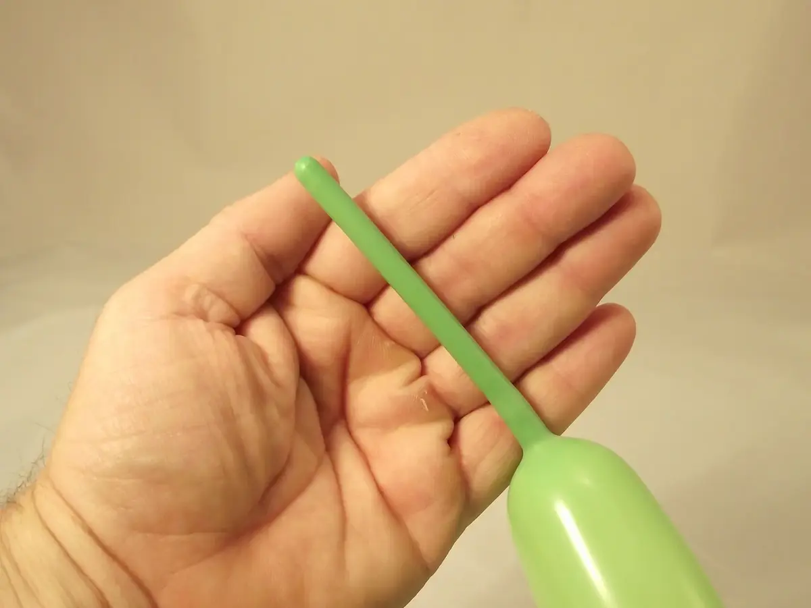
1- Inflate a balloon leaving a margin at the end of about the width of a hand, then tie a knot without making it too tight.2- Starting from the knotted end, make a first, well-rounded bubble, about two fingers wide at most.3- Make three more bubbles following it, of the same size as the first.
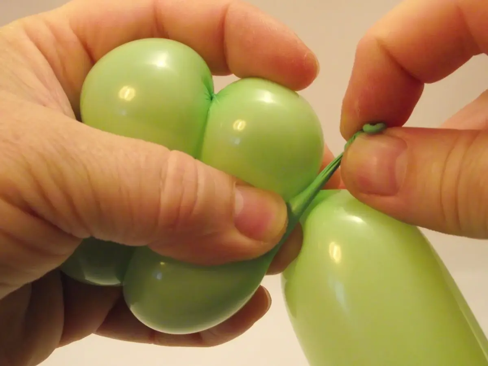
4- Pull the knot of the balloon and hold it to the base of the four bubbles...5- then twist all four bubbles together several times, while holding the knot to their base, to block the assembly together.
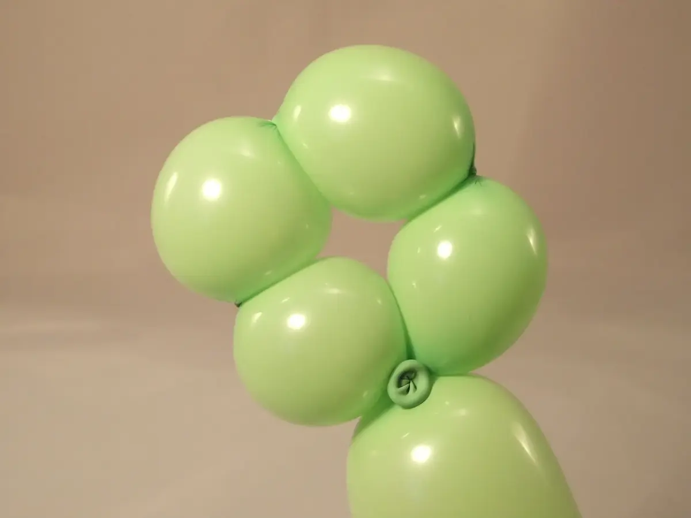
6- The result should look like this.
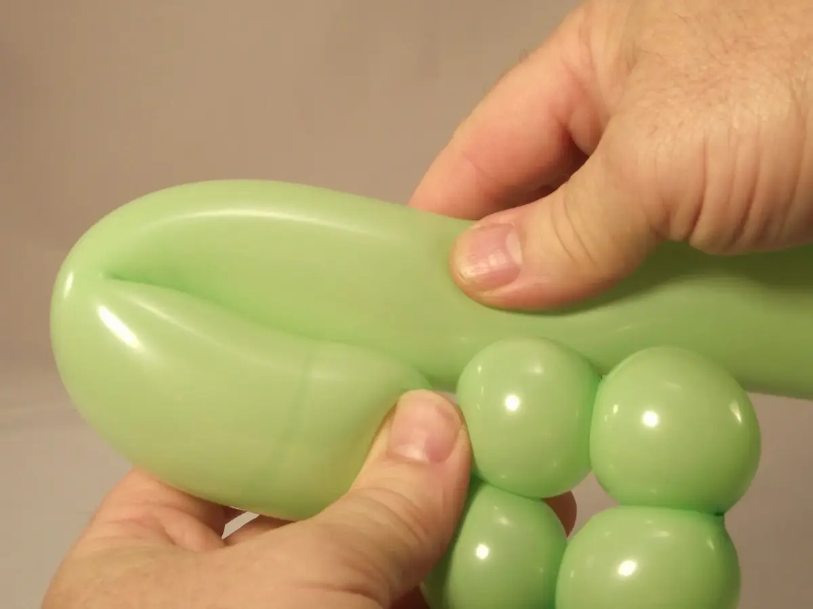
7- Fold the balloon at a length that's slightly larger than the height of the four bubbles to form a loop.
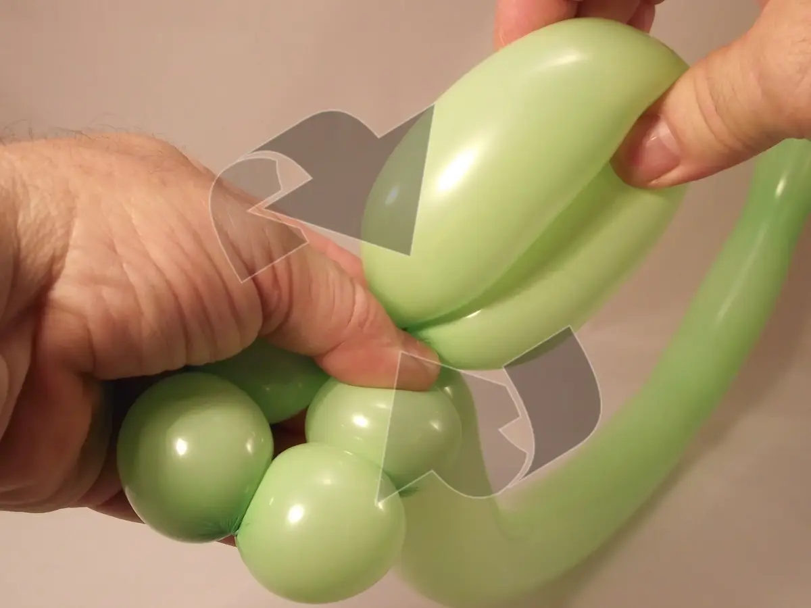
8- Block the loop at the base of the bubbles.
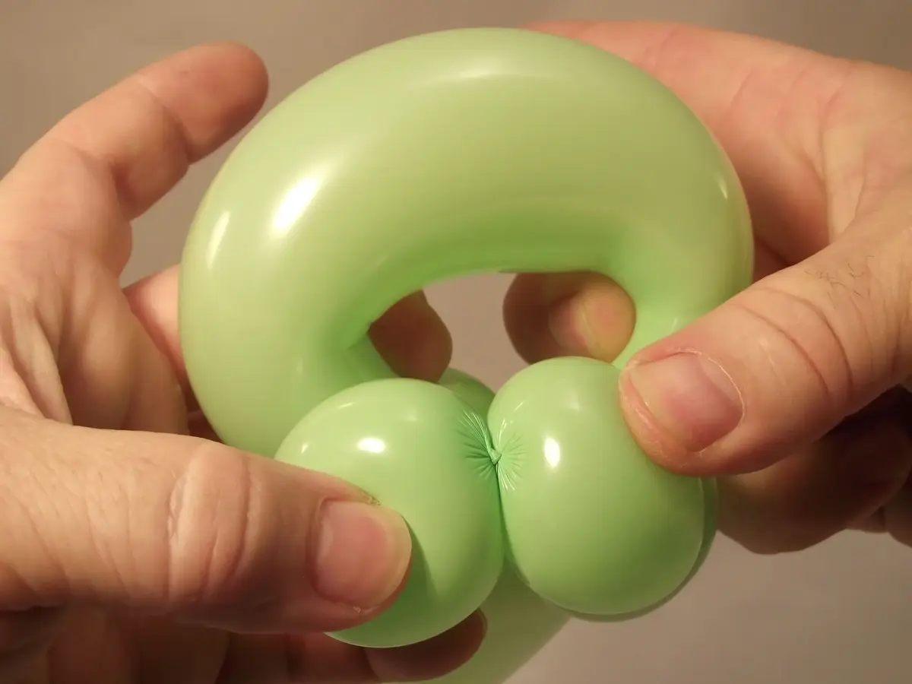
9- Open the loop wide with your middle fingers and place your thumbs on each of the top bubbles.10- Press the two top bubbles making a clamp movement towards the inside of the loop, still held firmly with your middle fingers.
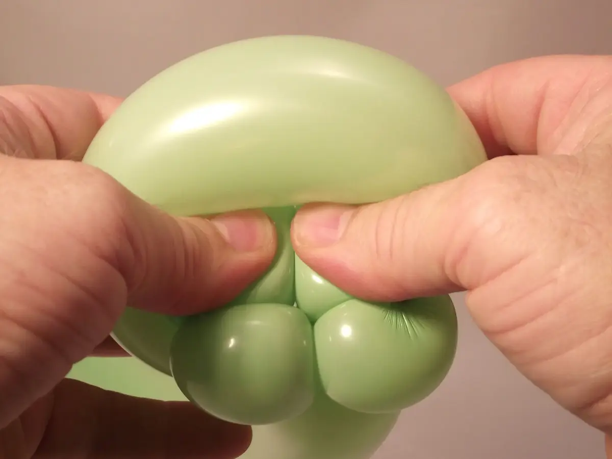
11- Push the two top bubbles all the way into the loop, pressing in increments so that the friction on the lining of the balloon isn't too high.
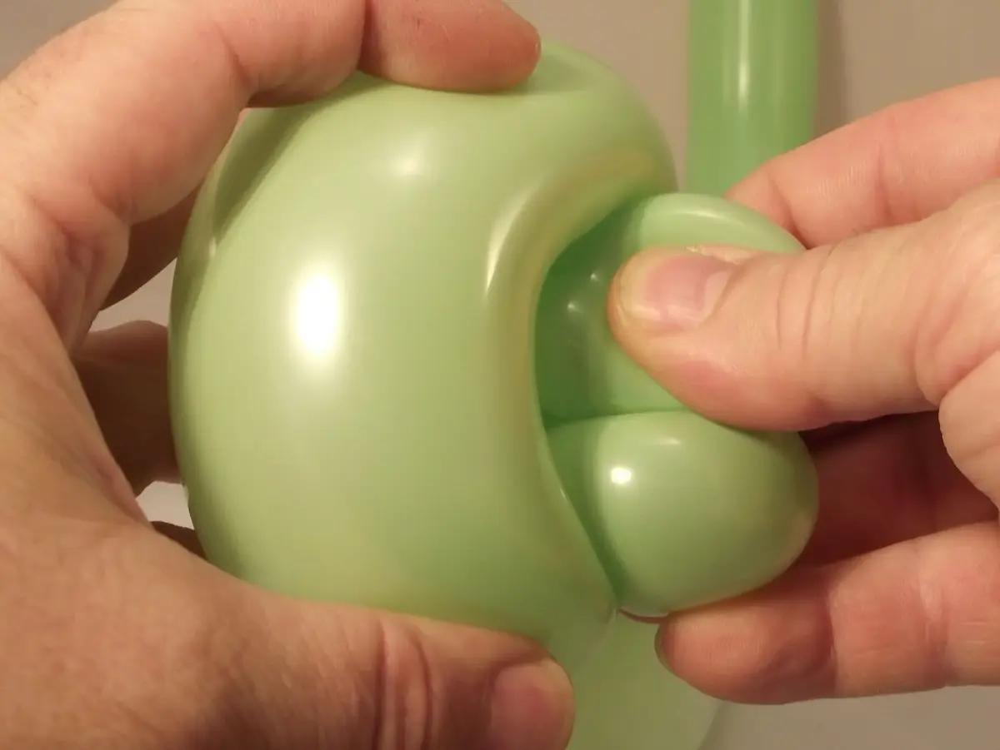
12- Once the two top bubbles come out on the other side of the loop, take hold of them and finish embedding them on the other side of the loop. (Careful: Don't push the bottom bubbles through at the same time!)
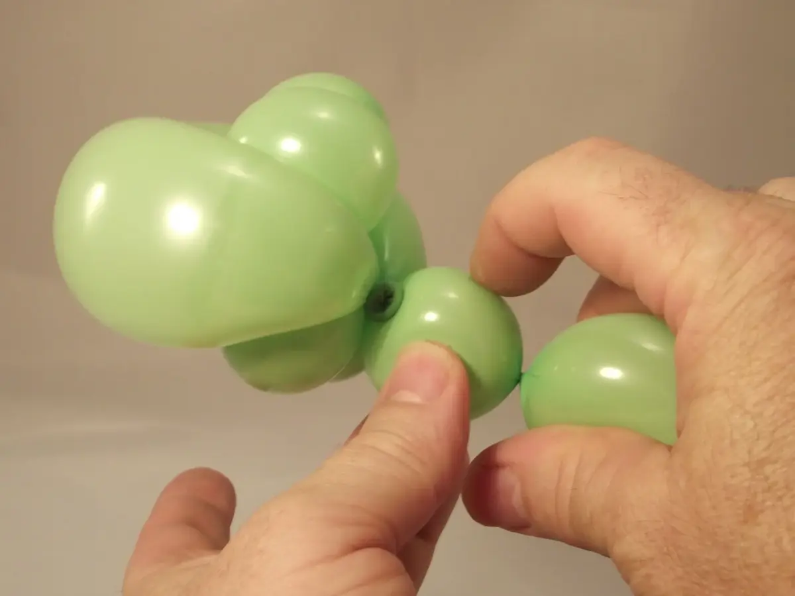
13- Then form a little, well-rounded bubble...
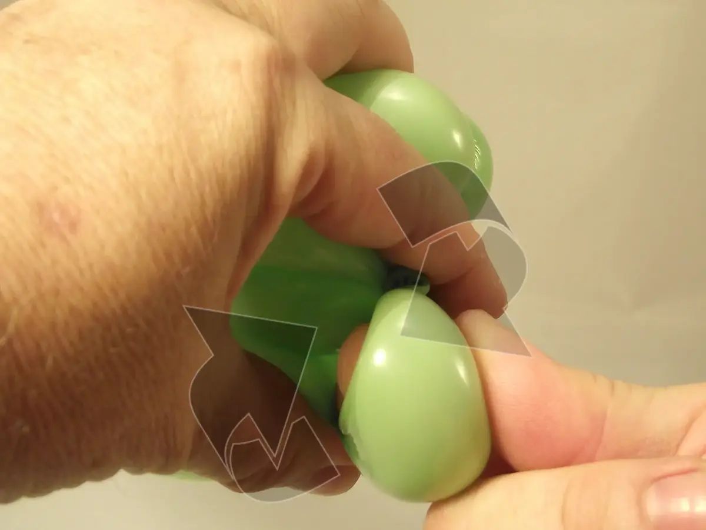
14- and make that bubble into a "pinch-twist"
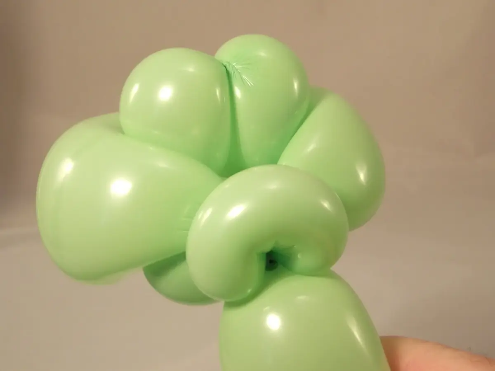
15- The result should look like this (this will be the head, seen from the back).16- And here is the head, seen from the front.17- Next, form a bubble about three fingers wide.18- Form a second bubble making sure it's the same size as the first, and bring them together...
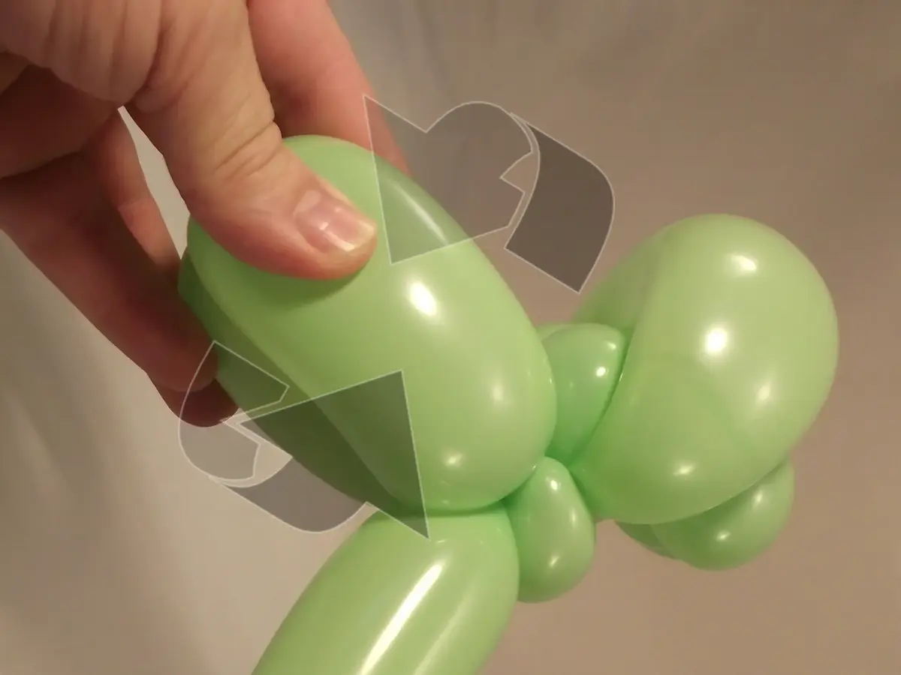
19- press them together at the base, and twist them together several times to block them together.20- Our frog now has a whole head and two front legs.
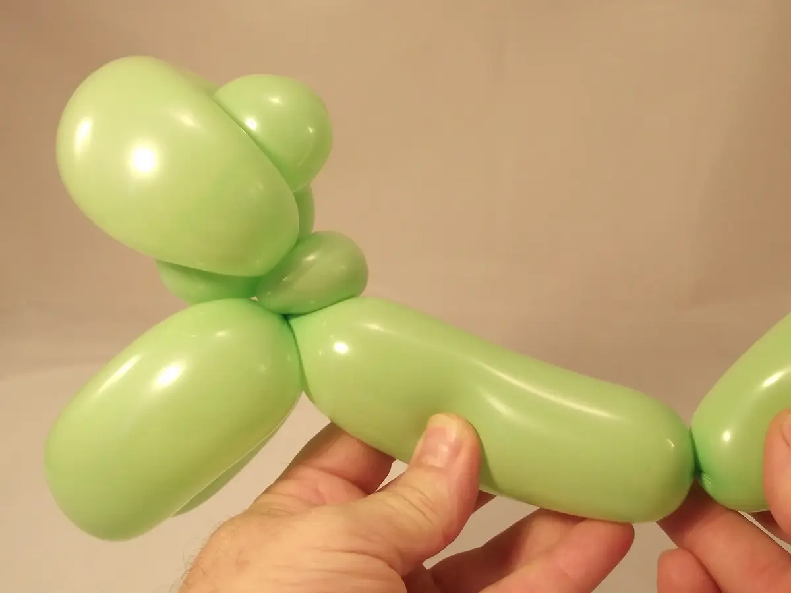
21- Make a longer bubble for the body.22- Then, with the remaining length of balloon, make two big bubbles of the same length (the hind legs), followed by a final, small, round bubble.23- Press the hind legs together at the base and twist them together several times to block them together.24- Give a rounded shape to the frog's stomach.25- Now you need to insert the short front legs between the long hind legs.
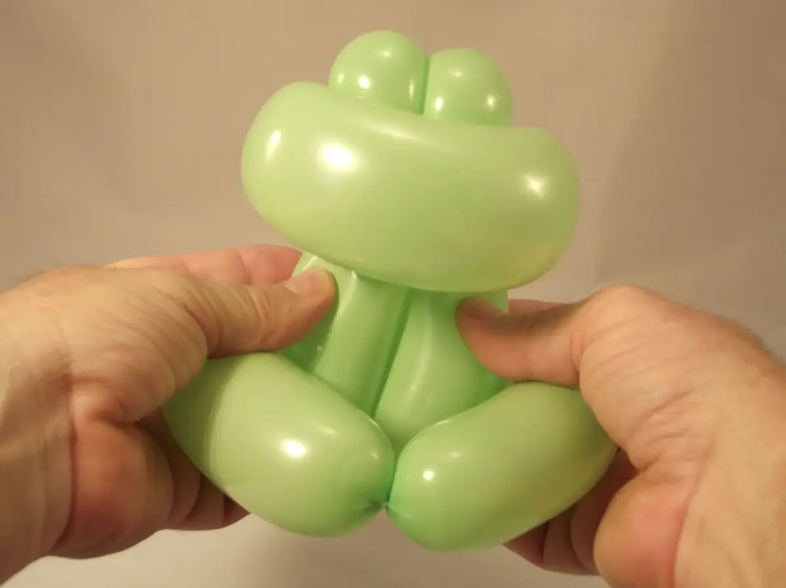
26- Widen the gap between the hind legs if need be, but not too much. There still needs to be enough tension to keep the front legs in place.27- Here is our little frog with no drawing on it.28- And here it is, drawn on with a black felt-tip marker and a few touches of white.29- The body can be positioned in several ways. It can be pushed between the two hind legs...30- or, conversely, left to stick out which gives the frog an arched back. The back can also be shorter, it's at your discretion.31- And there!See you soon! For another lesson... with Môssieur Ballon!